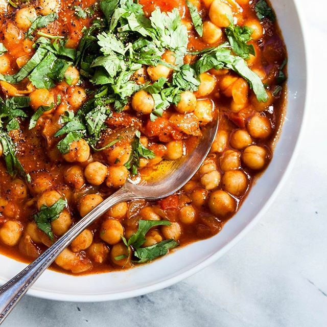

Shakshuka

Description
This tagine is a deliciously spicy meal that is my go-to dinner for guests, because everyone loves it and it's vegan! I usually pair it with some cumin roasted cauliflower.
Ingredients
- 1 tablespoon olive oil
- 2 onions, minced
- 4 cloves garlic, minced
- 2 teaspoons ground turmeric
- 2 teaspoons ground cumin
- 1 teaspoon ground cinnamon
- ½ teaspoon cayenne pepper
- ½ teaspoon ground black pepper
- 1 ½ teaspoons agave nectar
- 2 tablespoons water, or as needed
- 3 carrots, cut into 1/4-inch slices
- ¼ teaspoon salt
- 2 (14 ounce) cans chickpeas (garbanzo beans), drained and rinsed
- 4 lemon wedges
- 4 sprigs fresh cilantro, or as desired
Steps
- Heat oil in a tagine or Dutch oven over medium heat; cook and stir onions and garlic until softened, 5 to 10 minutes. Add turmeric, cumin, agave nectar, cinnamon, cayenne pepper, and black pepper and stir until onion mixture is evenly coated. Add just enough water to cover the bottom of the tagine; add carrots and salt. Cook over medium-low for 12 minutes.
- Mix chickpeas into carrot mixture, adding more water if needed to cover the bottom but keeping the sauce thick. Cook mixture for 7 minutes.
- Serve tagine with lemon wedges and cilantro.